評価基準：
A=楽勝で解けた
B=ミスはあったがほぼ解けてた
C=ヒントを見ることにより解けた
D=あんまり解けなかった
E=全然解けなかった
これは、「技」の問題演習を記録し、自分の理解度を可視化しながら効率よく復習するために開発したwebアプリです。完全無料、アカウント登録なしで簡単に使えます。基本的には"高等進学塾 高２東京医進数学ⅠA・ⅡBクラス受講生"の使用を想定していますが、高３以降や非受講生でも使えます。まずはアプリの使い方やより効果的な勉強の仕方を確認して、日々の演習に役立ててください。
（文責：高等進学塾 数学科 井村）
大学入試数学を網羅的・体系的かつコンパクトに分かりやすく整理した、高進数学科専任講師である松村先生の集大成とも言うべき１冊です。高２東京医進数学クラスでは、これを副教材として毎週の授業に相当する範囲を演習してもらっています。毎週の講義内容ともリンクしているので、受講生では特に効果的な学習効果が期待できます。全国の書店や通販サイトでも購入できますし、高進受付でも購入できます（受付で購入すれば、割引＋購入者特典があります）。
・使い始める前に、まずはwebページを（スマホの）ホーム画面に追加してください！
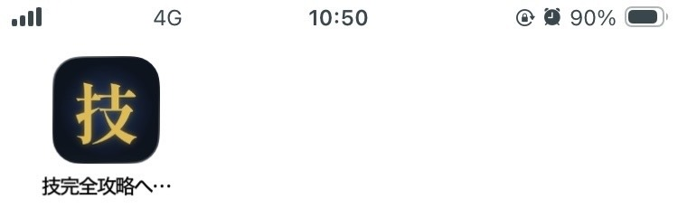
・ホーム画面のアイコンから開けば、普通のアプリのようにワンタップで起動できるので快適です。
・また、webブラウザによっては「一定期間アクセスがないとそのサイトが保存したデータを自動削除する仕組み」により、せっかくの演習記録が消えてしまうリスクがありますが、ホーム画面に追加することでそれを回避できるようです。
・まずは下記の要領で、トップ画面をホーム画面に追加してください。
iPhone（Safari）：画面下の「共有」ボタン→「ホーム画面に追加」
Android（Chrome）：右上のメニュー（︙）→「ホーム画面に追加」または「アプリをインストール」
・トップページで学期（1学期／2学期／3学期以降）を選んで「START」を押すと演習画面が開きます。
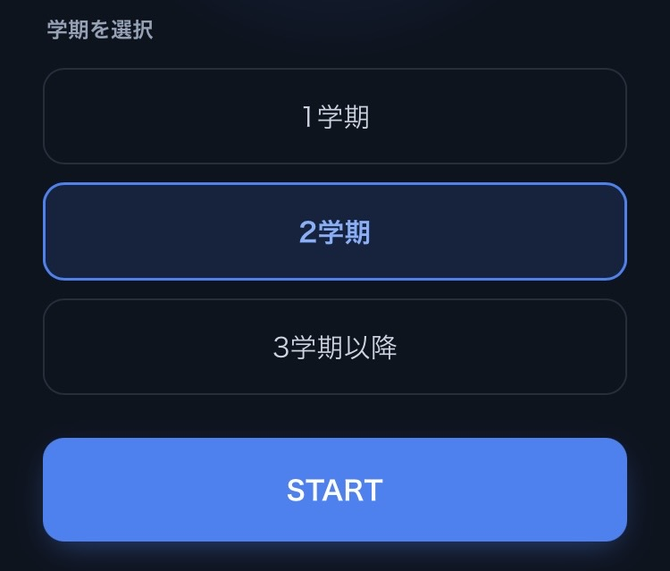
・アプリ上部のプルダウンから講を選択すると、その講の問題一覧が表示されます。
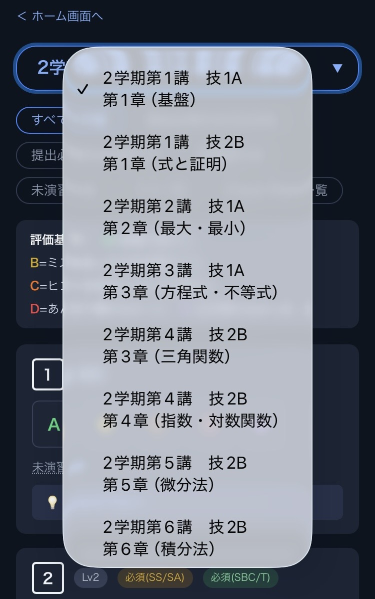
・画面上部のタブで、問題の表示を絞り込めます。
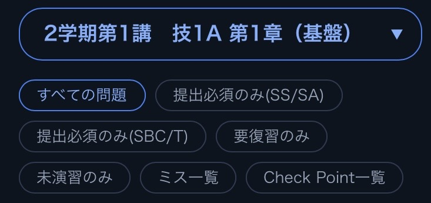
・高２東京医進数学ⅠA・ⅡBクラスでは、「技」の毎週の講義内容に相当する章の、1学期はLv.1-2、2学期はLv.1-3、3学期はLv.1-4の問題を演習します。これが次回講義での確認テスト、および学期末の大テストの試験範囲となります。
・講によっては分量が多いことがあるため、受講生では最低でもこれだけは演習しておくべきという問題を、クラスに応じて「必須課題」として指定しています（リストは授業内で配布）。
・まずは問題文のみを見て問題を解いてみましょう。それで解き方がわからない場合は、問題ページの右にある「Theme分析」に、解く上でのポイントやヒントが記載してあるので、適宜読みながら解いても構いません（重要な点や本質がまとまっているので、何も見ずに解けたとしても、一読するのを強く推奨します）。
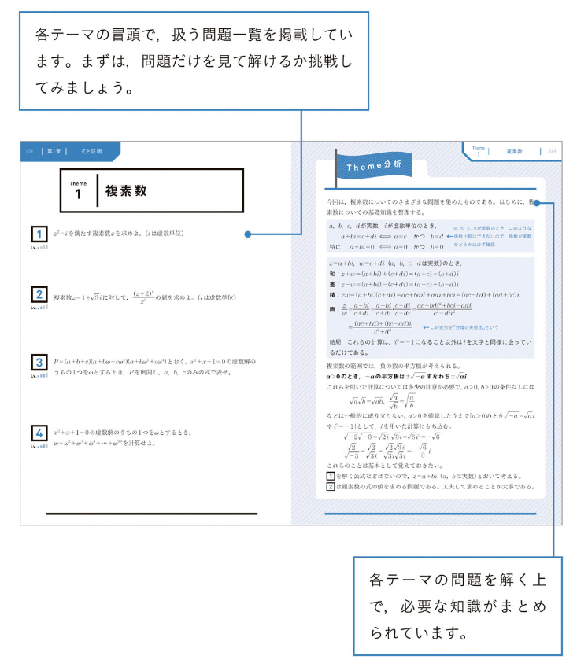
・該当ページの問題を解き終えたら、解答を確認しましょう。答えが合っていたかどうかだけでなく、解答が適切に書けていたかも重要です。また、別解も重要である場合が多いので、それも含めて学習しておきましょう。
・ミスを含めて解けなかったものは、「なぜ自分が解けなかったのか」を考えることが何より重要です。「ミスだとしたらどのようなミスなのか」「分からなかったものは自分にどのような知識・視点が欠けていたのか」「次からどうしたら解けるようになるのか」など、考えることなくして成長は絶対にありません。
・「技」と全く同じ問題しか解けないのでは意味がなく、姿形が変わったものでも同様に解けないといけません。そのためには、その問題に含まれる「本質」を理解することが重要です。解答ページの中にある「navigate」や「SKILL UP」といったところにそのような「本質」を導く文言が詰まっていますので、必ず読んで理解できるようにしておきましょう。
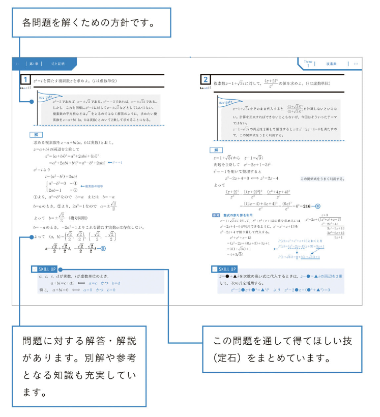
・各問題を解いたら、下の5段階で自己評価してください。
・5段階ボタンをタップすると、日時つきで自動的に記録されます。同じ問題を何度演習してもすべて履歴として残ります。
・演習履歴は、各問題の「最新評価：〜」の行をタップすると確認できます。演習日時やミス内容を変更したい場合は✏️、演習記録を削除したい場合は🗑️をタップして編集してください。
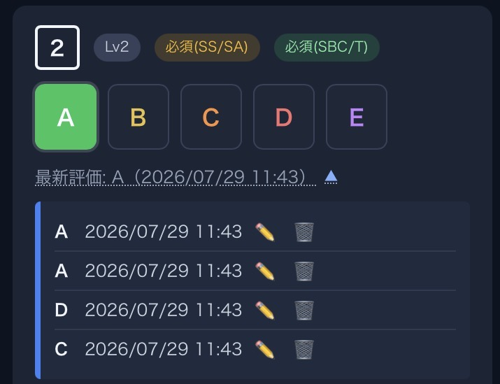
・Bを選んだときは「ミス内容」を選ぶ画面が出ます（複数選択可、自由記載も可、記載なしでも可）。ミスを減らすためには、「自分がどのようなミスをしやすいのか」を認識することがまず何より重要です。そうすることで、次に同様の状況に出会ったときに計算を丁寧にしたり検算したりといった工夫が生じやすくなり、ミスの減少に繋がります。あとで見返したときに、どこでどんなミスをしたのかが分かるようにしておきましょう（講ごとに一覧でも表示されます）。
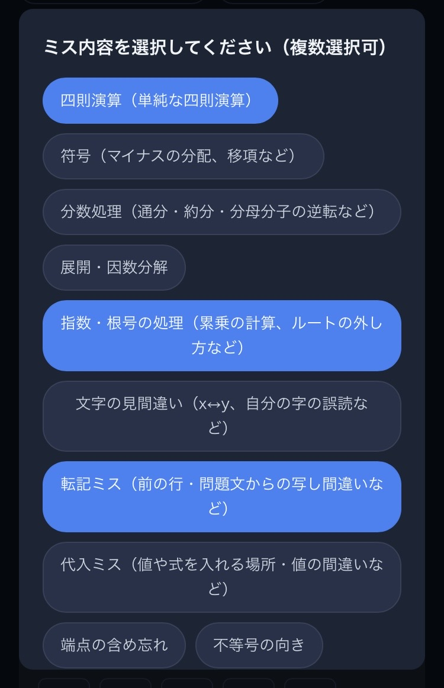
・演習履歴は学期が変わっても自動的に引き継がれる仕様になっています。
・3.で述べたように、「技」と全く同じ問題しか解けないのでは意味がなく、その問題に含まれる「本質」を理解し、再現（言語化）できるようになることが重要です。
・アプリ内で各問題の下側にある「💡 Check Point！」をタップすると、その問題の「本質を突いた質問」が表示されます（講ごとに一覧でも表示されます）。
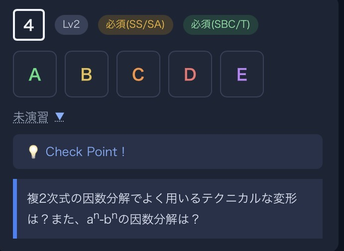
・これは、ただ解いて終わりにするのではなく、本質を理解し自分の力で再現（言語化）できるようになっているかをセルフチェックするための機能です。一通り演習した後でいいので、ぜひ質問に自分の言葉で答えられるかどうか確認してみてください。
・通常の暗記カードのようなものとは異なり、質問の答えはあえてアプリ内では表示していません。つまり、答えは自分で探していただく必要があります。
・解答ページの「navigate」や「SKILL UP」、問題ページ右の「Theme分析」、あるいは「技」の解答の中や授業プリントの中に答えが必ずありますので、確認して自分で答えを探してみてください。
（参考）科学的根拠に基づいた効果の高い勉強法①「アクティブリコール」
教材を見ずに、記憶の中から情報を引っ張り出す練習を「アクティブリコール（想起練習）」と呼び、数百の研究で効果が確認されている最も信頼性の高い勉強法の一つです。ある実験では、同じ文章を「繰り返し読んだグループ」と「白紙に何も見ずに書き出す練習をしたグループ」を比較したところ、5分後こそ再読組が上回ったものの、2日後・1週間後には完全に逆転し、想起練習をしたグループの方が高い成績を残しました（Roediger & Karpicke. Psychological Science. 2006;17(3):249-255.）。
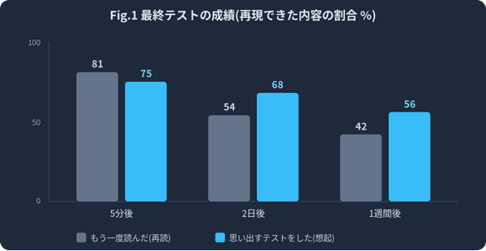
しかも本研究における学生自身の予想はこれと逆で、多くの人が「繰り返し読んだ方が覚えていられる」と思い込んでいたようです。「読んで理解した気になる」ことと「見なくても再現できる」ことは、脳にとって全く別の状態です。Check Point！は、この「見なくても再現できるか」を確認するための機能です。答えを見て分かった気になるだけで終わらせず、必ず自分の言葉で説明できるかどうか試してみましょう。
（参考：安川康介『科学的根拠に基づく最高の勉強法』KADOKAWA, 2024）
（参考）科学的根拠に基づいた効果の高い勉強法③「自己説明・精緻的質問」
「なぜこの式変形をするのか」「なぜこの補助線なのか」「なぜこの公式が成り立つのか」など、自分の言葉で説明することを「自己説明」あるいは「精緻的質問」と言います。Wongらは高校数学（定理の学習）で自己説明訓練を行った群の方が、特に応用・転移問題で高成績だったと報告しています（Wong RMF, et al. Learning and Instruction. 2002;12(2):233-262.）。まさにCheck Point！の概念そのものであり、Dunloskyらの評価でも効果は有望とされています（ただし、アクティブリコール・分散学習〈後述〉ほど広範な検証がないための保留付き評価です。Dunlosky J, et al. Psychological Science in the Public Interest. 2013;14(1):4-58.）。
（参考：安川康介『科学的根拠に基づく最高の勉強法』KADOKAWA, 2024）
・全ての問題を一度解いただけでできるようになるということは、まずあり得ません。重要なのは、時間を空けて何度も繰り返すことです。
・一度解いて解けなかった問題を「答えを写しておしまい」とする勉強法はNGです。必ずその週の内に、自分の手で解けるようになるまで（せめてB評価にはなるまで）解き直しましょう。
・ただし、それだけだと短期的には身についても、長期的には定着しきらない可能性が高いです。時間を空けて繰り返し演習することで、初めて長期記憶として定着します（「分散学習」と言い、詳細は下記参照）。
・高2東京医進のカリキュラムは1年間で数1A2Bの内容を3周することになるため、それだけでも分散学習による効果が見込めますが、問題のレベルも追加され分量も増えていく中で、前学期の内容が未完成なまま次に進んでいくのは学習に困難が伴います。ですので、1学期の間にLv1-2、2学期の間にLv1-3の問題は、全て完璧に解ききることを目標として、その期間内に何度も繰り返しましょう（それが一番の大テスト対策です）。
・全ての問題を１から解き直すのは効率が悪いので、このアプリをうまく利用しましょう。基本的に、初めからA評価であったもの（状況にもよるがB評価も）は、繰り返し解く意義には比較的乏しいと考えます。一方で、C-E評価が付いたものは、A（or B）評価になるまで何度も解き直す必要があります。C-E評価には「要復習」問題として赤色のバッジが付きます。このバッジは、A（or B）評価が2回連続で出ると自動的に外れるようになっていますので、A（or B）評価になった後も時間を空けて再度演習し、再びA（or B）評価にできるかどうか必ず確かめるようにしましょう。
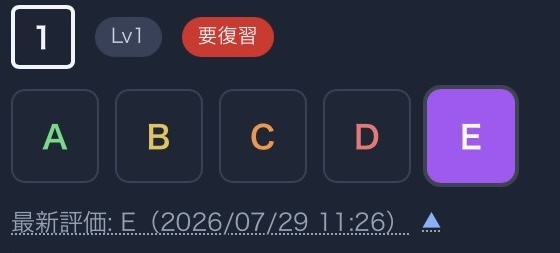
（参考）科学的根拠に基づいた効果の高い勉強法②「分散学習」
同じ内容を学習する際、1回にまとめて集中するよりも、時間を空けて複数回に分けて復習する方が、長期的な記憶の定着に優れることが分かっています。これを「分散学習」と呼びます。184本の論文をまとめた分析でも、間隔を空けた学習はまとめて学習するよりも一貫して高い成績につながるという、非常に信頼性の高い結果が出ています（Cepeda et al. Psychological Bulletin. 2006;132(3):354-380）。復習の間隔の目安は「試験までの残り日数の10〜20%程度」とされます（例えば1週間後のテストなら翌日、数ヶ月後の大テストなら1〜3週間後）。アプリが記録する演習日時は、「次にいつ復習すべきか」を判断するためにも活用してください。
（参考：安川康介『科学的根拠に基づく最高の勉強法』KADOKAWA, 2024）
○ 学習到達度チェッカー 📊
ホーム画面の「学習到達度チェッカー 📊」を開くと、「技」の各章について、現在の学習到達度を棒グラフで確認できます。
画面上部のタブから、1学期／2学期／3学期以降を切り替えられます。それぞれの学期で対象となる問題は次の通りです。
到達度は、各問題につけた最新の自己評価を、次の点数に換算して計算しています。
A：5点 B：4点 C：3点 D：2点 E：1点 未演習：0点
すべての対象問題がA評価の場合を100%として、章ごとの到達度を表示します。複数回演習した問題については、過去の平均や最高評価ではなく、最後につけた自己評価が反映されます。
なお、「要復習」バッジがついたままA・Bをつけた場合は、その評価をそのまま反映せず、C評価として点数計算します。バッジは、A・B評価が2回連続で出るまで外れない仕様になっているため、1回良い評価がついただけで満点評価にしないための措置です。バッジが外れて初めて、A・Bの評価がそのまま反映されます。
ただし、この数値はあくまで自分で記録した自己評価をもとにした目安です。一度A評価をつけただけで完全に定着したとは限りません。時間を空けてもう一度解き、本当に自力で再現できるか確かめながら活用してください。
最後に開いていた学期のタブは自動的に保存され、次回も同じタブから確認できます。演習履歴を追加・編集・削除した場合は、最新の記録をもとに到達度が自動で再計算されます。
○ 機種変更時のデータ書き出し
演習記録はこの端末（このブラウザ）だけに保存されており、他の端末とは自動で同期されません。機種変更やブラウザの変更をする前に、必ず以下の手順でバックアップを取ってください。
○ アップデート情報の確認
・トップ画面いちばん下の「アプリ ver X.X.X 更新履歴＞」をタップすると、これまでのアップデートで何が変わったかを一覧で確認できます。
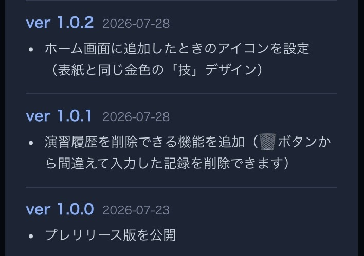
・基本的にブラウザ内でアップデートは自動的に実施されますが、動作が遅れる場合があるので、適宜「🔁 最新版を確認する」ボタンを押してご確認下さい。アップデートされても学習履歴が消去されることはありません。
はい、無料です。「技」の教材自体は購入が必要ですが、このアプリ自体の利用に料金はかかりません。今後も基本的には無料で提供する予定です。
いいえ、登録は一切不要です。ログインやメールアドレスの入力なしに、アクセスするだけですぐに使えます。そもそも利用者登録の仕組み自体がアプリに存在しません。
いいえ、自動的に共有されることはありません。演習記録はご自身の端末（ブラウザ）内にのみ保存される仕組みになっており、サーバーやデータベースは存在しないため、講師や塾を含め誰にも送信されません。
著作権上の観点から、それはできません。アプリには「技」の問題文や解答そのものは収録しておらず、問題番号と開発者が独自に作成したCheck Pointのみを扱う仕様にしています。お手数ですが、「技」を必ず手元に用意した上でご使用ください。
人によって能力や到達度が異なるので、決まった正解の回数はありません。目安として「1学期の間にLv.1-2、2学期の間にLv.1-3、3学期の間にLv.1-4（最低でもLv.1-3）の問題を完璧に解ききるまで繰り返す」ことを目標にしてください。カリキュラム自体が1年で技を3周する設計になっており、これは「間隔を空けて繰り返す（分散学習）」と「できるまでアクティブリコールを繰り返す（連続的再学習）」を組み合わせた、理にかなった仕組みになっています。1周目でC〜Eだった問題を「要復習」フィルタで拾い、A（or B）になるまで周回ごとに解き直す、というアプリの使い方がそのまま実践方法になります。
意味はゼロではありませんが、効果は限定的です。同じ文章を2回目に読むとスラスラ読めるようになりますが、脳はこれを「覚えた」と誤解しがちです（「処理の流暢性」による錯覚と呼びます）。しかし「見れば分かる」と「見なくても再現できる」は全く別物で、テストで問われるのは後者です。読むのは最初の理解のためと割り切り、そのあとは実際に手を動かして問題を解く、Check Point！に自分の言葉で答える、といった「思い出す」練習に時間を使いましょう。
教科書や解答をそのまま書き写す「まとめノート作り」は、手は動いていても頭はほぼ受け身の状態になりやすく、Dunloskyらの評価でも効果は「低」とされています（Dunlosky J, et al. Psychological Science in the Public Interest. 2013;14(1):4-58.）。ただし、教材を閉じて、記憶の中から思い出しながら書くなら、それは単なるまとめ作業ではなく「アクティブリコール」になります。ノートは「完成品を作る」のではなく「思い出すための道具」として使うのがおすすめです。
技の演習だけで自動的に合格が保証されるわけではありませんが、「技」はその範囲において最も効率的な演習法の土台になると確信しています。本アプリで推奨している勉強法を意識して「技」を使えば、同じ時間でも定着度は大きく変わります。ただし、「技」以外にも他の数学問題の演習、他教科とのバランスなど、合格には様々な要素が関わってきますので、担当講師とも相談しながら計画を立ててください。
よくある悩みですが、原因は「解法を覚えている」段階で止まっていて、「なぜその解法を使うのか」という本質まで理解できていないことがほとんどです。対策は大きく2つあります。
（参考：安川康介『科学的根拠に基づく最高の勉強法』KADOKAWA, 2024）
「Check Point！」の質問一覧は作成しましたが、（諸事情により）現時点では答え一覧を作成する予定はありません。適宜「技」を確認するようにしてください。「Check Point！」のまとめノートを作るのは前述の通り非効率的なので推奨しませんが、どうしても覚えられないものだけノートに書き出したり暗記カードで繰り返したりするのは、アクティブリコールや分散学習という観点からも良いのではないかと思います。
「技」の内容が本質的な部分まで完璧に習得できたら（といってもそれが中々大変です）、次にその内容をアウトプットすべく種々の問題を解いていくことになります。世の中には大学入試数学の参考書は沢山ありますが、最も推奨したいのが「講義テキストの解き直し」です。高２東京医進数学では1年間で600問程度の問題をテキストで扱うので、それだけでかなりの演習量になります。講義テキストも至極の良問を詰め込んでおり、技の内容ともリンクしており、何より授業内で自分の耳で聞き目で見て手で書いた内容が詰まっているので、再演習による学習効率が非常に高いと考えます。講義内容は一度聞いただけでは完全に再現できるわけではなく、むしろ大部分を忘れてしまっているものです。講義ノートやプリントには、復習しやすくするための講師の工夫が散りばめられています。長くなりましたが、講義問題の再演習を強く勧めます。それも済んでしまって手持ち無沙汰だという方は、適宜担当講師に相談してください。
まず「自分がどのようなミスをしやすいのか」を認識することが第一歩です。アプリのB評価時のミス記録・ミス一覧機能は、そのための「メタ認知（自分の理解や癖を客観的に把握すること）」のツールです。自分のミスの傾向が分かれば、同じような場面で「ここは丁寧に」「ここは検算しよう」といった工夫が自然に働くようになり、ミスの減少につながります。テスト直前には、ミス一覧を見直しリストとして活用しましょう。
はい。今後デザインや機能、データの追加・修正を行う可能性があります。より勉強が楽しく捗るような仕組みを現在進行形で考え中です。アップデート情報は適宜ご確認ください（7.参照）。
諸事情によりweb上でやり取りできる仕様にはしていないので、何かあれば担当講師または開発者（井村）に遠慮なくお伝えください。ご意見は吟味した上でできる限り反映します。あえて反映しない場合やできない場合等は、Q＆A欄などに理由を適宜明記するように心がけます。
高等進学塾／designed by Masahiro Imura
各章の最新の自己評価から算出しています